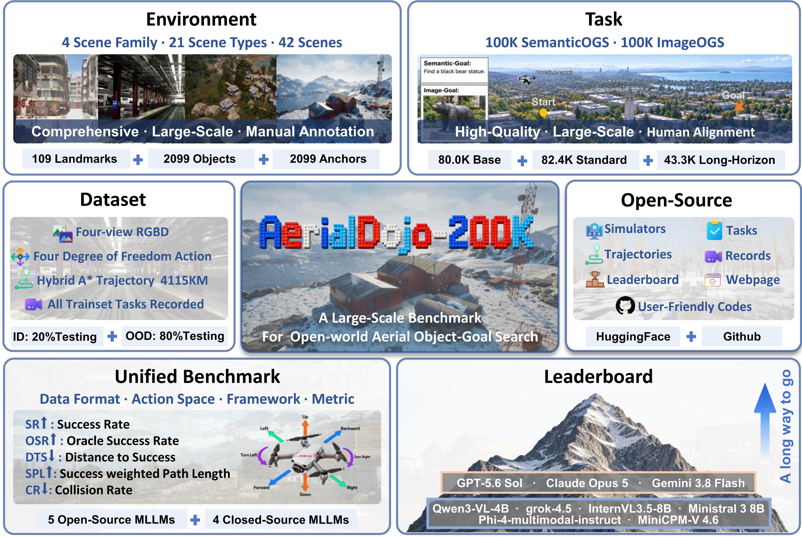
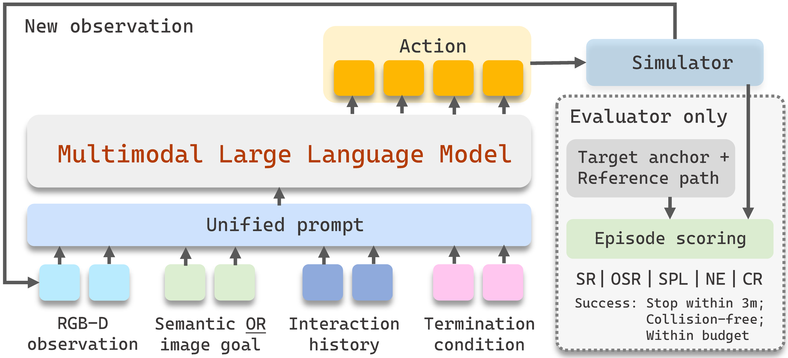
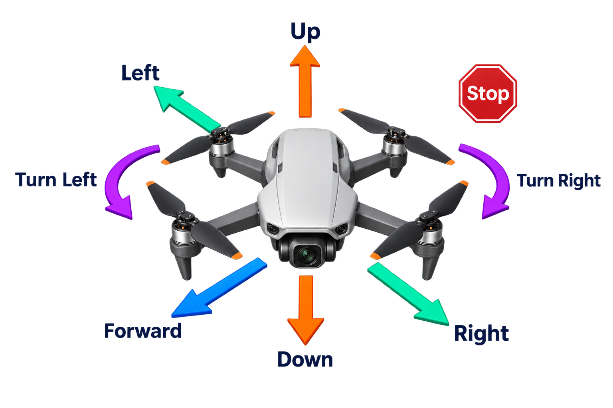
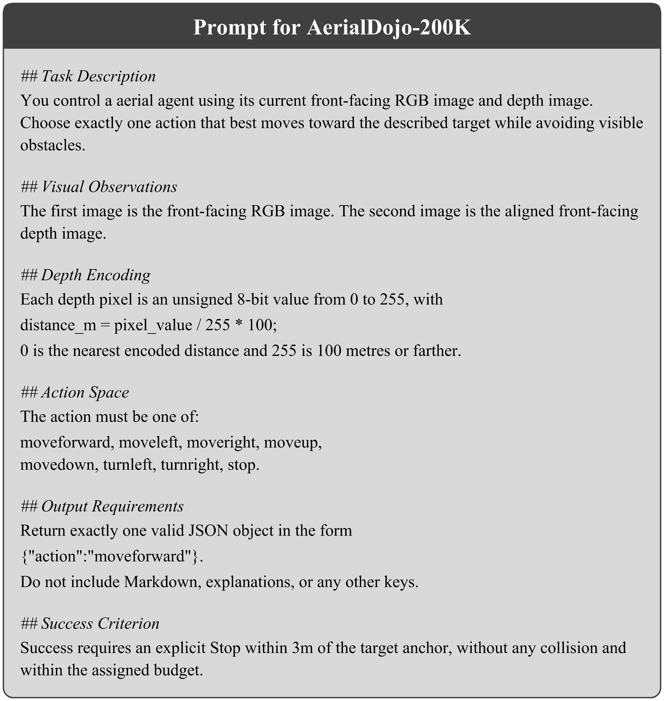

Demo
Overview

Open-world aerial object-goal search is a foundational yet challenging task, requiring aerial agents to autonomously explore large-scale, unstructured three-dimensional environments and reach target objects specified by semantic descriptions or reference images, rather than following route-specific instructions. However, research in this task remains at a nascent stage and relies on small, environment-specific benchmarks with heterogeneous action spaces and data formats. These limitations hinder large-scale training and cross-benchmark evaluation, constraining the scalability and generalizability of aerial agents. To address this problem, we propose AerialDojo-200K:
Large-Scale
AerialDojo-200K comprises 42 scenes across four scene families and 21 scene types, and 205,732 task instances spanning SemanticOGS and ImageOGS under Base, Standard, and Long-Horizon settings. AerialDojo-200K offers 3× as many scenes and 18.7× as many task instances as the largest prior benchmark for aerial object-goal search.
High-Quality
AerialDojo-200K provides extensive manual annotations of 109 landmarks, 2,099 objects, and 2,099 object anchors, completed by 12 annotators over two months. AerialDojo-200K includes collision-free reference trajectories totaling 4,115.313 km of unique routes and 63,177 groups of multi-view recordings, recorded exclusively for training.
Unified Evaluation
AerialDojo-200K unifies data formats, action spaces, and evaluation protocols, with 21 in-distribution and 21 out-of-distribution scenes. AerialDojo-200K evaluates nine multimodal large language models, revealing that existing methods still have a long way to go towards general-purpose aerial agents.
Standard Operating Procedure

Dataset Statistics

Task Composition

Train / Test Split

Mean Trajectory Length

Unified Benchmark
Evaluation Framework

Sensors

Action Space


Leaderboard
Base tasks · 3 m success radius
Download CSV ↓Aerial ENVS
Citation
@misc{aerialdojo2026,
title={AerialDojo-200K: A Large-Scale Benchmark Suite for Open-World Aerial Object-Goal Search},
author={Anonymous Authors},
year={2026}
}